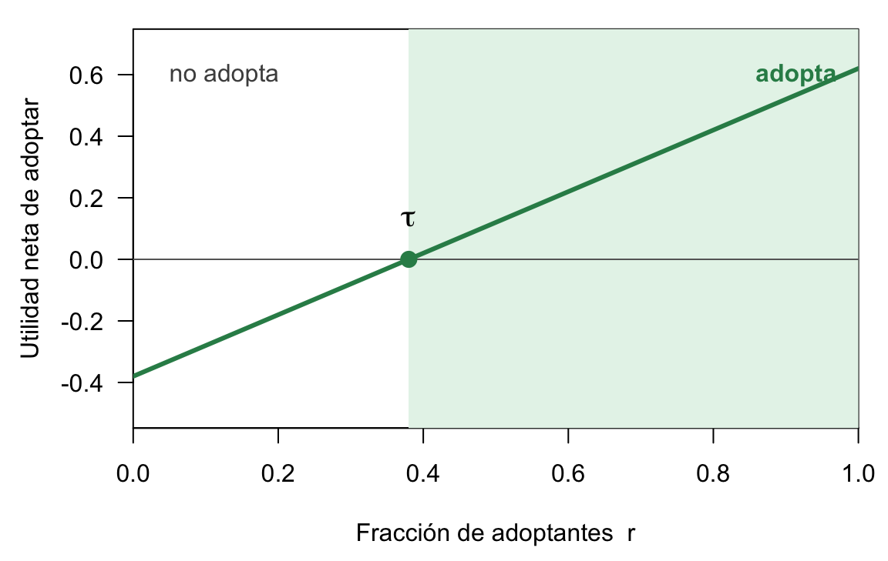
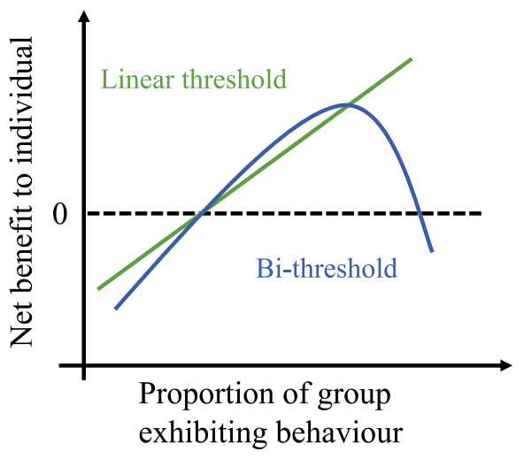
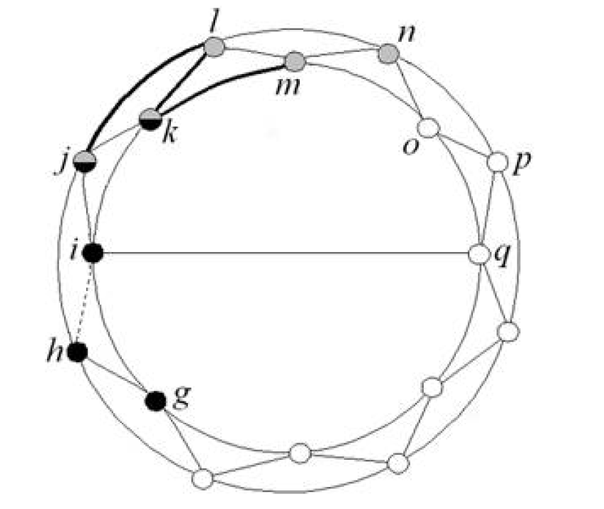
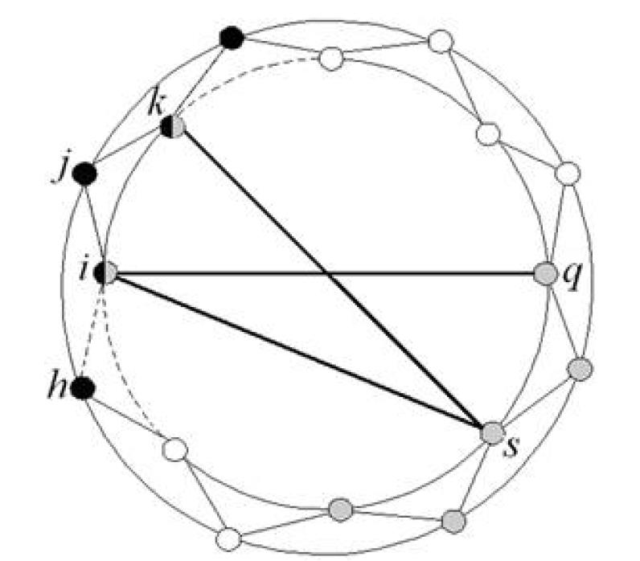
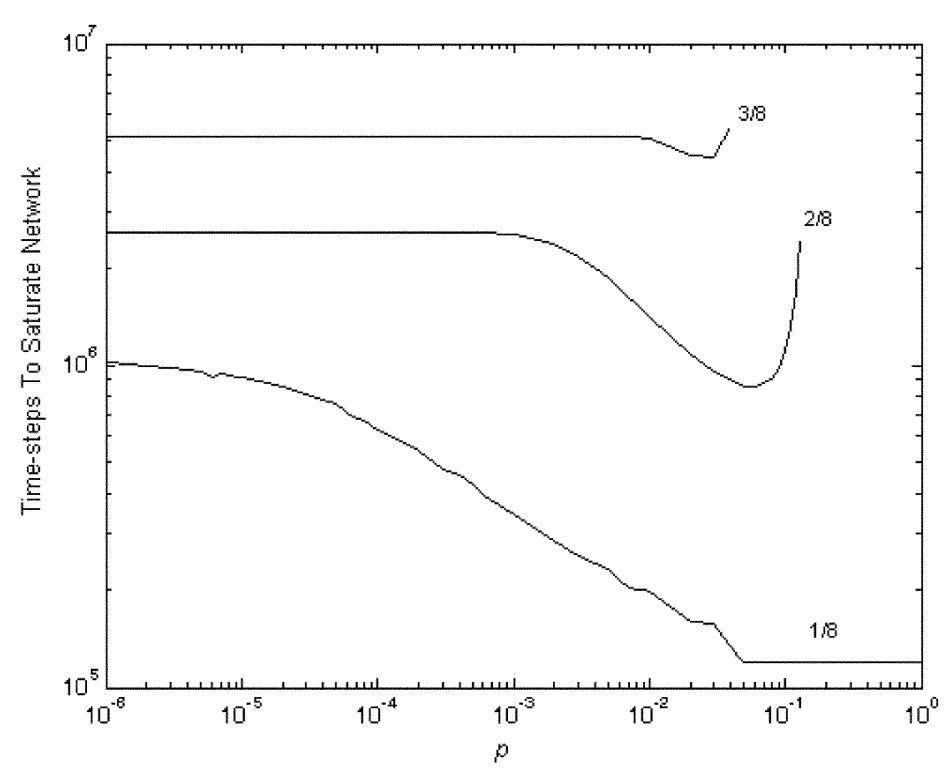
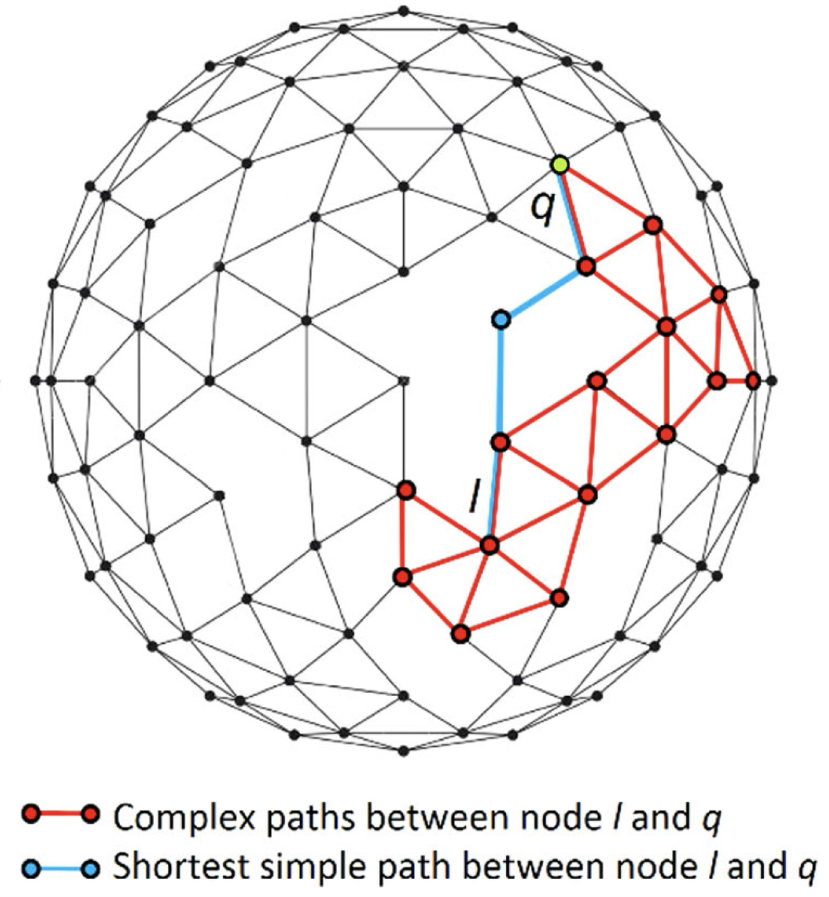
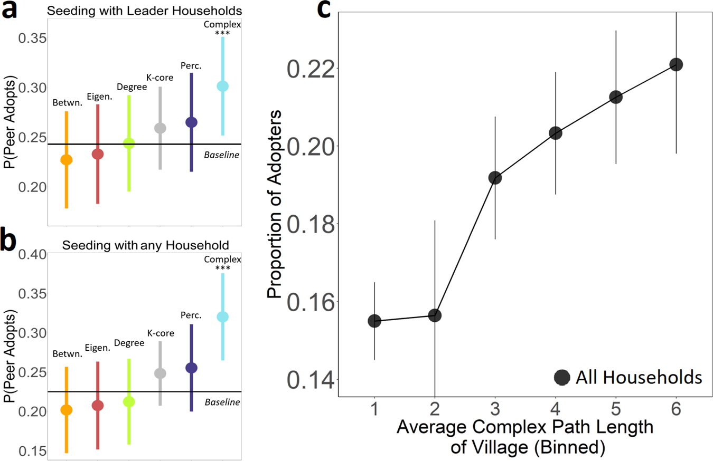
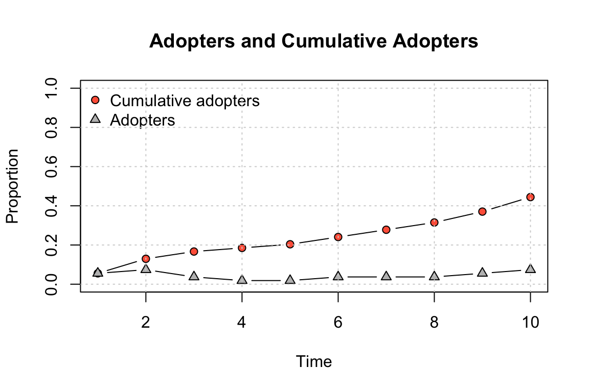
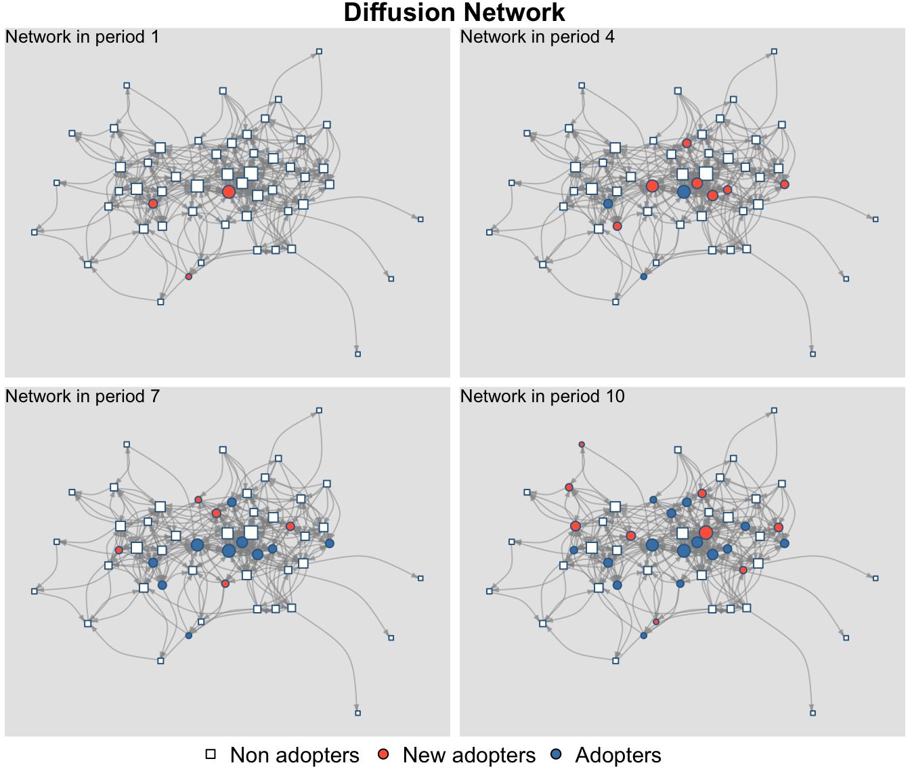
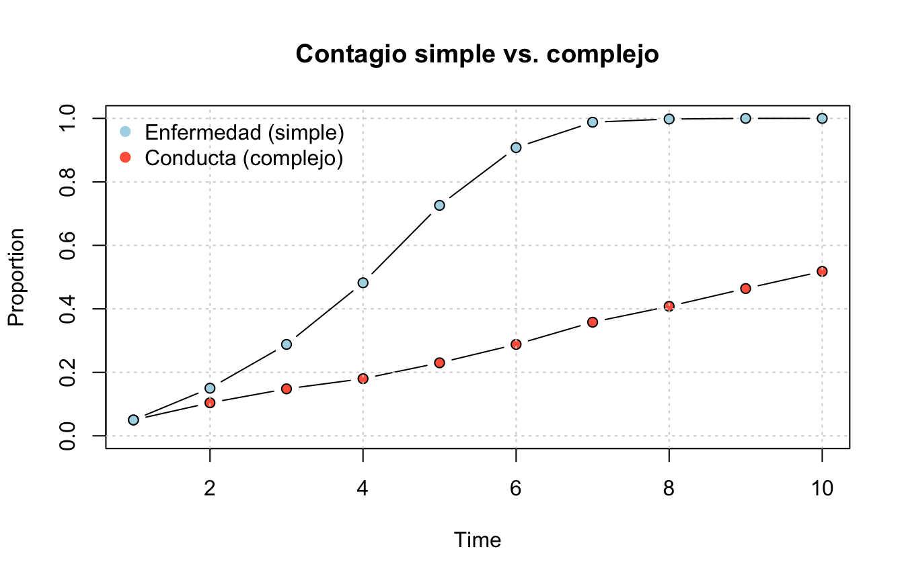

5 Contagio social en redes
| Sección | Contenido |
|---|---|
| 1. Umbrales | Granovetter (1978) → Valente (1996); qué es un contagio complejo |
| 2. Mecanismos | Por qué una exposición no basta: coordinación, credibilidad, legitimidad, emoción |
| 3. Características | Fracciones, fuentes independientes, similitud vs. diversidad, bi-umbral, sesgos |
| 4. Lazos largos | Centola & Macy (2007): puentes anchos vs. atajos |
| 5. Centralidad compleja | Guilbeault & Centola (2021), con su evidencia mixta |
| 6. netdiffuseR | De la encuesta al diffnet; simulaciones básicas |
| Anexo | Transiciones de fase de primer y segundo orden |
6 Umbrales para la acción colectiva
6.1 Granovetter (1978): decidir bajo interdependencia
El punto de partida de todo modelo de contagio social es una idea simple de Granovetter: muchas decisiones son binarias (actuar o no actuar) y su utilidad depende de cuántos otros ya actuaron.
Supongamos cada individuo \(i\) tiene un umbral \(\tau_i\): la fracción mínima de adoptantes que necesita observar para actuar:
\[ a_i = 1 \iff r \geq \tau_i, \]
donde \(r\) es la proporción de la población que ya actuó. Lo notable es que la distribución de umbrales captura toda la dinámica. Agregación ≠ preferencias individuales.
NotaEjemplo canónico
Hay 100 trabajadores con umbrales \(0, 1, 2, \ldots, 99\). El de umbral 0 actúa; eso activa al de umbral 1; eso activa al de umbral 2… los 100 terminan actuando.
Ahora quitamos al trabajador de umbral 1 y lo reemplazamos por otro de umbral 2.El proceso muere en 1.
Dos poblaciones con preferencias casi idénticas producen resultados colectivos opuestos. El resultado de la acción colectiva no está en las preferencias, está en su distribución.
6.2 Valente (1996): el umbral se vuelve de red
En vez de ver la proporción global \(r\), cada persona mira su propia red. La exposición de \(i\) es la fracción de sus contactos que ya adoptaron,
\[ E_i = \frac{\sum_{j} X_{ij}\, a_j}{\sum_{j} X_{ij}}, \]
entonces: \[ a_i = 1 \Leftrightarrow E_i \geq \tau_i \]
Es la misma idea de Granovetter, pero ahora el resultado colectivo pasa a depender de la topología.
6.3 Qué es un contagio complejo
Antes de seguir con la estructura, conviene detenerse a explicar qué es un contagio complejo y qué lo explica.
La definición canónica es la de Centola & Macy (2007): un contagio es simple cuando basta un contacto con una fuente activada para transmitirlo (una enfermedad, una noticia, una oferta de trabajo), y es complejo cuando “requiere contacto con múltiples fuentes de activación”.
La palabra “umbral”, sin embargo, se define como “el punto donde los beneficios netos empiezan a exceder los costos netos” de actuar. Para un individuo con umbral del 38%, el beneficio neto de sumarse a un motín comienza a ser positivo en algún valor cercano a 38%.
Guardemos esta figura: más abajo, el bi-umbral será simplemente la misma curva pero no monotónica, que vuelve a cruzar el cero cuando demasiados adoptan. Granovetter mismo lo anticipó: su modelo estipula que la curva no cruce el eje “más de una vez”, y advierte que si lo hace “se necesitan modelos más complejos”.
NotaEjemplos que la literatura ha tratado como contagio complejo
- Conductas de salud en un foro en línea (Centola 2010, Science): registrarse en un sitio de salud se difundió más y más lejos en redes clusterizadas que en aleatorias.
- Hashtags políticos y controversiales en Twitter (Romero et al. 2011), frente a los idiomáticos, que se comportan como contagio simple.
- Cambiar la foto de perfil por el signo igual en apoyo al matrimonio igualitario (State & Adamic 2015).
- Una técnica agrícola nueva en Malawi (Beaman et al. 2021): casi nadie adopta con un vecino informado, pero sí varios con dos.
- Salir a protestar en la Primavera Árabe (Steinert-Threlkeld 2017) y en las protestas de 2011–2013 (Barberá et al. 2015).
- En teoría: la credibilidad de una leyenda urbana, la adopción de una tecnología nueva, la disposición a participar en una manifestación riesgosa, una moda de vanguardia (Centola & Macy 2007).
7 Mecanismos de contagio complejo
¿Por qué una exposición no basta? Cuatro mecanismos identificados, cada uno con su microfundamento.
- Complementariedad estratégica
La innovación vale más cuantos más la usan: un teléfono, una red social, una moneda. Eso es, formalmente, un juego de coordinación: mi pago depende de que los demás elijan lo mismo que yo.
Morris (2000) demostró que en una red ese juego produce exactamente un umbral: me conviene cambiar cuando la fracción de vecinos que ya cambió supera \(q = b/(a+b)\), donde \(a\) y \(b\) son los pagos de coordinar en cada opción.
- Credibilidad
No sé la calidad de la innovación o lo provechoso de una conducta. Una mezcla entre cascadas informacionales (si tres personas que eligieron por separado adoptaron, eso actualiza mi creencia más que una sola -Bikhchandani, Hirshleifer & Welch 1992 y Banerjee (1992)-) y efecto de fuentes múltiples (la información que llega de fuentes que no se coordinaron entre sí es más informativa que la misma información repetida -Harkins & Petty 1981, 1987-).
- Legitimidad
Aquí no dudo de si funciona, sino de si está permitido. Ver a varios cercanos asistir a una protesta es lo que la legitima (Granovetter 1978; McAdam 1986 sobre el activismo de alto riesgo).
Bicchieri (2006) define una norma social como una regla que sigo porque espero que los demás la sigan y que esperen que yo la siga; por eso necesito ver a varios cumplirla para creer que rige. Samuelson & Zeckhauser (1988) agregan el freno del sesgo de statu quo: ante la duda, la gente se queda donde está.
- Contagio emocional
Los impulsos expresivos se amplifican en reuniones concentradas social y espacialmente.
La barrera no es cognitiva sino afectiva: necesito que sientan lo mismo. Hatfield, Cacioppo & Rapson (1993) documentan el contagio emocional automático: mimetismo facial, sincronía postural, convergencia afectiva.
TipResumen
Coordinación necesita que los demás lo usen; credibilidad, que lo prueben; legitimidad, que lo aprueben; emoción, que lo sientan. Las cuatro son cosas que una sola persona no puede darme.
8 Características del contagio complejo
8.1 Se usan fracciones, no conteos
En un contagio simple, los no-adoptantes son irrelevantes: si tengo contacto con alguien con sarampión, me contagio, sin importar cuántos sanos conozca. En un contagio complejo, los no-adoptantes son una señal activa (influencias contrarias). Por lo tanto, lo que predice adopción no es cuántos amigos ya lo han hecho, sino qué fracción.
O sea, cuanto más conectado estás, más influencias contrarias enfrentas. Por eso los “hubs” suelen ser frenos y no aceleradores de los contagios complejos. Eso explica por qué los movimientos —la Primavera Árabe en Egipto (Steinert-Threlkeld 2017), el Ice Bucket Challenge (Sprague & House 2017)— nacieron en la periferia.
8.2 Número de fuentes, no de exposiciones
Lo que cuenta no es cuántas veces recibo la señal, sino de cuántas fuentes distintas e independientes la recibo. Harkins & Petty (1981, 1987) hallaron este efecto de fuentes múltiples: los mismos argumentos, presentados por varias personas independientes, persuaden más que repetidos por una.
NotaPuentes anchos históricos
Saetre (2025, AJS): Un violador en tu camino saltó de Valparaíso a 60 países en semanas. La diáspora chilena formada en los 70 funcionó como puente ancho latente: clusters de personas con lazos simultáneos a Chile y a sus sociedades de acogida, que primero replicaron la performance en solidaridad y luego permitieron que locales no chilenos la adaptaran. La autora mide el ancho del puente con el tamaño de la diáspora por ciudad y sus lazos vigentes con Chile, y muestra la secuencia diáspora → adaptación local → prescindir del intermediario.
8.3 Bi-threshold: umbral de desadopción
Si el umbral es el punto donde la utilidad neta se vuelve positiva, nada impide que demasiada adopción la vuelva negativa de nuevo. Tres posibles mecanismos (Alipour et al. 2024):

- Saturación o congestión: el valor cae con la multitud (bar “El Farol” de Arthur; una app que se vuelve lenta).
- Pérdida de distinción: el snob effect de Leibenstein (1950), lo que valía por exclusivo deja de valer cuando lo tiene todo el mundo.
- Señalización de identidad: abandonar un rasgo cuando lo adoptan los “otros” (Berger & Heath 2007).
8.4 Similitud o diversidad: depende de la barrera
Si las fuentes independientes son lo que convence, ¿deben parecerse a mí o ser distintas entre sí? Centola (2022) responde que depende de cuál barrera opera:
Cuando la barrera es credibilidad o emoción, convencen los pares similares — la prueba social de mi propio grupo (Centola 2011: la homofilia aumenta la adopción de conductas de salud).
Cuando la barrera es legitimidad, también convencen las fuentes diversas: State & Adamic (2015) midieron el cambio masivo de fotos de perfil en Facebook en apoyo al matrimonio igualitario en el caso del signo igual, la gente cambió su foto cuando vio adoptantes de círculos sociales distintos — abuelos, colegas, amigos del colegio —. Eso probaba que el apoyo era amplio y el riesgo social era bajo.
8.5 Confirmar sesgos (simple) vs desafiarlos (complejo)
La información que confirma los sesgos de una comunidad es fácil de entender y de aceptar (contagio simple), y la información que desafía esos sesgos encuentra resistencia (contagio complejo), por lo que la desinformación siempre corre con ventaja de mecanismo.
Ejemplo: Las mascarillas en la pandemia. La misma conducta es contagio simple en comunidades que confiaban en la autoridad sanitaria y contagio complejo donde no.
9 Contagio complejo y la debilidad de los lazos largos
Granovetter (1973) mostró que los lazos débiles aceleran las difusiones simples: una enfermedad, información laboral, una noticia. Dijo: “lo que sea que se deba difundir puede llegar a un mayor número de personas y atravesar una mayor distancia social cuando se transmite a través de lazos débiles en lugar de fuertes.”
Centola y Macy están en contra de esa frase. Definamos
- \(z\): número de vecinos,
- \(\tau\): umbral.
Conectamos cada nodo con sus \(z\) vecinos más próximos, y luego recableamos una fracción \(p\) de lazos al azar.



Se simula: \(z = 8\), umbrales \(\tau = 1/8, 2/8, 3/8\), y se miden los pasos necesarios para la saturación en función de \(p\).

9.1 Resultados principales de Centola & Macy (2007)
- El contagio simple se beneficia de la aleatorización. Con \(\tau = 1/8\), la curva es decreciente.
- El contagio complejo no se beneficia de niveles bajos de aleatorización. Con \(\tau = 2/8\), la curva es plana hasta \(p \approx 10^{-3}\).
- El efecto de \(p\) sobre el tiempo de saturación no es monótono para contagios complejos: baja, toca un mínimo y sube hasta que la propagación falla (transición de fase de primer orden en la propagación).
- La difusión de información no es equivalente a la difusión de comportamientos. La frase de Granovetter es falsa para la difusión de comportamientos.
NotaTransición de fase de primer orden
Centola & Macy dicen que el colapso de la propagación al aumentar \(p\) es “una transición de fase de primer orden”. Ver el anexo sobre transiciones de fase.
10 Cómo sembrar: centralidad compleja
Todas las centralidades que aprendimos —grado, intermediación, cercanía, autovector— se construyen usando como unidad los pasos dentro de la red. En contagio complejo, necesitamos usar como unidad los puentes entre vecindarios.
Un puente es un conjunto de lazos reforzantes que conecta dos clusters densos. Un nodo periférico y con bajo grado puede ser más influyente que un hub si está embebido en un vecindario denso con puentes anchos hacia otros clusters.

La centralidad compleja se calcula simulando: para cada nodo, se activa su vecindario y se corre una cascada de umbral determinista. Es una centralidad definida por un proceso que requiere 1) asumir un umbral \(\tau\), 2) validarla en simulación es casi circular.
En las 43 aldeas indias del programa de microfinanzas de Banerjee et al. (2013), las aldeas con mayor largo de camino complejo promedio difundieron más, y los hogares con alta centralidad compleja —no los “líderes” que los investigadores habían preseleccionado— predicen mejor que sus vecinos adopten.

Su afirmación textual es cuidadosa: “network locations with low degree centrality and low betweenness centrality may nevertheless be the most influential locations in the population.” La periferia gana cuando está embebida en un vecindario denso con puentes anchos.
10.1 La evidencia empírica es mixta
10.1.1 En contra de los hubs
- Kim et al. (2015, Lancet) — RCT en 32 aldeas: sembrar en los de mayor in-degree no superó al azar.
- Centola (2010, Science) — las redes clusterizadas difunden más un comportamiento de salud que las aleatorias.
- Ugander et al. (2012, PNAS) — 54 millones de invitaciones a Facebook: la probabilidad de unirse no crece con el número de amigos ya dentro, sino con el número de componentes conexas entre ellos. Cinco amigos que se conocen entre sí pesan menos que tres que no se conocen. Es la firma directa del efecto de fuentes múltiples.
- Romero, Meeder & Kleinberg (2011) — para cada hashtag, la curva “probabilidad de adoptar tras la \(k\)-ésima exposición”. En los hashtags políticos y controversiales la curva sigue subiendo con la segunda, tercera y cuarta exposición (persistencia); en los idiomáticos, cae tras la primera.
- Mønsted et al. (2017) — el problema de lo anterior es que quienes reciben más exposiciones son distintos de quienes reciben pocas. Mønsted controló eso con bots en Twitter que fijan cuántas fuentes distintas exponen a cada usuario: la adopción responde al número de fuentes, como predice el modelo complejo y no el simple.
- Barberá et al. (2015, PLoS ONE) — en las protestas de Gezi, Occupy y los indignados, la periferia (usuarios con pocos seguidores, que participan poco) generó la mayor parte del alcance total del movimiento en Twitter. El núcleo produce el contenido; la periferia lo hace masivo.
- Steinert-Threlkeld (2017, APSR) — geolocalizando tuits durante la Primavera Árabe: la coordinación en la periferia (medida con hashtags y menciones de usuarios poco conectados) predice las protestas del día siguiente; la actividad del núcleo, no.
10.1.2 Matices
- Banerjee et al. (2013) — su centralidad de difusión (camino simple) sí predijo la adopción: la información viaja simple aunque adoptar sea complejo.
- Valente & Vega Yon (2020) — con distribuciones de umbral (media 0.33 y varianza), las semillas de alto in-degree son las más rápidas y las marginales las peores.
- Iyengar, Van den Bulte & Valente (2011) — los líderes de opinión sí aceleran la adopción de un fármaco.
10.1.3 En lo que sí hay consenso
Lo que fracasa es la siembra dispersa, y lo que funciona es la siembra reforzada (nodos adyacentes redundantes), esté en el centro (caro) o en la periferia (barato).
11 netdiffuseR: de la encuesta al modelo
netdiffuseR es el paquete de R para difusión en redes (Valente, Vega Yon y colaboradores). Tiene mucho más de lo que veremos; aquí, dos cosas: leer datos de encuesta y estimar el efecto de la exposición, y simular difusiones simples y complejas. Lo que sigue está tomado casi textualmente del taller oficial del paquete, donde hay más.
11.1 De la encuesta al diffnet
El paquete trae los tres datasets clásicos de difusión de innovaciones como encuestas crudas: los médicos y la tetraciclina (medInnovations, 1955), los agricultores brasileños y el maíz híbrido (brfarmers, 1966), y las mujeres coreanas y la planificación familiar (kfamily, 1973). Miremos la coreana:
library(netdiffuseR)
data(kfamily)
# Una fila por mujer encuestada: id, aldea, tiempo de adopción y hasta 15 nominaciones
kfamily[1:6, c("id", "village", "toa", paste0("net1", 1:5), paste0("net2", 1:5), paste0("net3", 1:5))] id village toa net11 net12 net13 net14 net15 net21 net22 net23 net24 net25
1 2 1 4 4 57 3 20 58 4 23 32 1 6
2 3 1 11 0 0 0 0 0 32 69 34 12 0
3 4 1 7 11 69 2 0 0 11 2 0 0 0
4 5 1 11 0 0 0 0 0 73 32 0 0 0
5 7 1 11 1 64 6 61 0 1 6 37 61 64
6 8 1 4 59 50 62 13 61 11 91 1 21 11
net31 net32 net33 net34 net35
1 32 23 0 0 0
2 12 0 0 0 0
3 11 2 0 0 0
4 0 0 0 0 0
5 6 37 0 0 0
6 26 25 95 0 3# El estudio siguió 10 períodos.
kfamily$toa[kfamily$toa == 11] <- NA
# 25 aldeas; adoptantes por período (y cuántas nunca adoptaron)
unique(kfamily$village) [1] 1 2 3 4 5 6 7 8 9 10 11 12 13 14 15 16 17 18 19 20 21 22 23 24 25table(kfamily$toa, useNA = "ifany")
1 2 3 4 5 6 7 8 9 10 <NA>
69 94 81 86 65 62 53 53 73 37 374 Esa es la estructura mínima de una encuesta de difusión: un identificador, las nominaciones (a quién le hablas de planificación familiar, a quién ves más, a quién le pides consejo) y el tiempo de adopción. La función survey_to_diffnet() arma con eso un objeto diffnet (la red más los tiempos de adopción). Trabajemos con la aldea 21:
kfamily_21 <- subset(kfamily, village == 21)
kfamily_diffnet_21 <- survey_to_diffnet(
dat = kfamily_21,
idvar = "id",
netvars = c(
"net11", "net12", "net13", "net14", "net15", # con quién habla de planificación familiar
"net21", "net22", "net23", "net24", "net25", # vecinas más cercanas
"net31", "net32", "net33", "net34", "net35"), # a quién pide consejo
toavar = "toa",
groupvar = "village"
)
kfamily_diffnet_21Dynamic network of class -diffnet-
Name : Diffusion Network
Behavior : Unknown
# of nodes : 54 (2101, 2103, 2104, 2106, 2107, 2109, 2110, 2111, ...)
# of time periods : 10 (1 - 10)
Type : directed
Num of behaviors : 1
Final prevalence : 0.44
Static attributes : village, recno1, studno1, area1, id1, nmage1, nmag... (430)
Dynamic attributes : -Dos gráficos vienen incluidos: la curva de adoptantes y la red coloreada por período:
plot_adopters(kfamily_diffnet_21)
plot_diffnet(kfamily_diffnet_21)
11.2 Lagged Regression
La pregunta de fondo: ¿la probabilidad de adoptar en \(t\) depende de la exposición en \(t-1\), controlando por el período? El modelo de exposición rezagada es
\[ y_{it} = 1 \iff \rho\, E_{i,t-1} + X_{it}\beta + \varepsilon_{it} > 0, \]
donde \(E_{i,t-1}\) es la fracción de contactos que ya habían adoptado en el período anterior, y \(X_{it}\) son covariables de la encuesta. Para tener más potencia usamos las 25 aldeas juntas (survey_to_diffnet con groupvar), y agregamos como controles la edad, el número de hijos y la exposición a afiches de planificación familiar (media12).
diffreg() estima el modelo directamente sobre el diffnet (exige que la exposición se llame literalmente exposure).:
kfamily_diffnet <- survey_to_diffnet(
dat = kfamily,
idvar = "id",
netvars = c(paste0("net1", 1:5), paste0("net2", 1:5), paste0("net3", 1:5)),
toavar = "toa",
groupvar = "village"
)
# Agregamos la exposición y la adopción acumulada como atributos dinámicos
kfamily_diffnet[["exposure"]] <- exposure(kfamily_diffnet)
kfamily_diffnet[["adoption"]] <- kfamily_diffnet$cumadopt
modelo <- diffreg(kfamily_diffnet ~ exposure + age + sons + media12 + factor(per),
type = "logit")
summary(modelo)
Call:
glm(formula = Adopt ~ exposure + age + sons + media12 + factor(per),
family = binomial(link = "logit"), data = dat, subset = ifelse(is.na(toa),
TRUE, toa >= per))
Coefficients:
Estimate Std. Error z value Pr(>|z|)
(Intercept) -3.387652 0.247985 -13.661 < 2e-16 ***
exposure 0.642739 0.151629 4.239 2.25e-05 ***
age 0.009399 0.007074 1.329 0.18395
sons 0.302777 0.038351 7.895 2.90e-15 ***
media12 0.122260 0.037430 3.266 0.00109 **
factor(per)3 -0.094156 0.162145 -0.581 0.56145
factor(per)4 0.044102 0.162945 0.271 0.78666
factor(per)5 -0.166121 0.177872 -0.934 0.35034
factor(per)6 -0.125468 0.182840 -0.686 0.49258
factor(per)7 -0.199322 0.192960 -1.033 0.30162
factor(per)8 -0.096307 0.195495 -0.493 0.62227
factor(per)9 0.392488 0.184716 2.125 0.03360 *
factor(per)10 -0.241655 0.222669 -1.085 0.27780
---
Signif. codes: 0 '***' 0.001 '**' 0.01 '*' 0.05 '.' 0.1 ' ' 1
(Dispersion parameter for binomial family taken to be 1)
Null deviance: 3928.5 on 6046 degrees of freedom
Residual deviance: 3775.7 on 6034 degrees of freedom
(1056 observations deleted due to missingness)
AIC: 3801.7
Number of Fisher Scoring iterations: 5La exposición es positiva y significativa aun controlando por edad, hijos, afiches y período: tener más contactos que ya usan planificación familiar aumenta la probabilidad de adoptarla al período siguiente. Los hijos y los afiches también importan; la edad, no. Eso es la firma mínima de un efecto de red.
AdvertenciaLo que la regresión no puede decir
Que la exposición prediga la adopción es consistente con contagio, pero también con homofilia (elegí como amigas a mujeres parecidas a mí, que adoptan cuando yo adopto).
NotaPara jugar
- Repite la regresión solo para la aldea 21 (
kfamily_diffnet_21). Con 54 mujeres, ¿sobrevive la exposición a los mismos controles? - Hazlo con
brfarmersDiffNety conmedInnovationsDiffNet, que ya vienen comodiffnet. En el segundo la exposición no es significativa: es coherente con Van den Bulte & Lilien (2001), que mostraron que el “contagio” de la tetraciclina se desvanece al controlar por el marketing farmacéutico. - Cambia
media12por otras fuentes (media6radio,media7TV,media14reuniones,media18visitas de trabajadoras de salud: ver?kfamily). ¿Cuál compite más con la exposición de red?
11.3 Simulación
rdiffnet() simula una difusión por umbrales sobre una red. Se le da (o se le pide que genere) una red, se eligen las semillas, se fija la distribución de umbrales, y en cada período adopta quien tenga exposición mayor o igual a su umbral. Una difusión conductual, con umbrales entre 30% y 70% de los vecinos:
set.seed(1213)
diffnet_behavior <- rdiffnet(
n = 500, # nodos
t = 10, # períodos
seed.nodes = "random", # semillas al azar...
seed.p.adopt = .05, # ...un 5% de la red
seed.graph = "small-world", # red de Watts-Strogatz
rgraph.args = list(p = .2), # con 20% de recableado
threshold.dist = function(x) runif(1, .3, .7) # umbral de cada nodo
)
diffnet_behaviorDynamic network of class -diffnet-
Name : A diffusion network
Behavior : Random contagion
# of nodes : 500 (1, 2, 3, 4, 5, 6, 7, 8, ...)
# of time periods : 10 (1 - 10)
Type : directed
Num of behaviors : 1
Final prevalence : 0.52
Static attributes : real_threshold (1)
Dynamic attributes : -Y una difusión tipo enfermedad, donde basta un vecino adoptante (umbral absoluto igual a 1):
set.seed(09)
diffnet_disease <- rdiffnet(
n = 500,
t = 10,
seed.graph = "small-world",
seed.nodes = "random",
seed.p.adopt = .05,
rewire = TRUE,
threshold.dist = function(i) 1L, # un vecino basta
exposure.args = list(normalized = FALSE), # umbral en conteo, no en fracción
name = "Disease spreading"
)plot_adopters(diffnet_behavior, what = "cumadopt", include.legend = FALSE,
main = "Contagio simple vs. complejo")
plot_adopters(diffnet_disease, bg = "lightblue", add = TRUE, what = "cumadopt")
legend("topleft", legend = c("Enfermedad (simple)", "Conducta (complejo)"),
col = c("lightblue", "tomato"), bty = "n", pch = 19)
La enfermedad satura la red en pocos períodos; la conducta avanza lento y se detiene antes de llegar a todos. Es la misma diferencia que Centola & Macy mostraron con el anillo, ahora en diez líneas.
NotaPara jugar
- En
diffnet_behavior, cambiaseed.nodesa"central"(los de mayor grado) y a"marginal"(los de menor grado). ¿Cuál difunde más? Compara con lo que dice la sección de centralidad compleja. - Sube el recableado
pa 0.5 y a 0.9 en ambas simulaciones. ¿Cuál se acelera y cuál se frena? Estás recorriendo la curva de Centola & Macy. - Cambia el umbral conductual a
function(x) 2Lconexposure.args = list(normalized = FALSE): ahora hacen falta exactamente dos vecinos. Con la funciónrdiffnet_multiple()puedes repetir la simulación cien veces y ver la distribución de la prevalencia final.